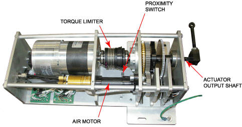

How To – Check the Actuator Spur and Anti-Backlash Gears
This How To provides the steps required to checking the actuator spur and anti-backlash gears.
The Throttle components are under power. To avoid personal injury or damage to equipment, disconnect power from the Throttle before working on the throttle quadrant, the controller or the actuator.
Static discharge may damage or degrade electronic components on a printed circuit board (PCB). Use a grounded wrist strap when handling printed circuit boards (PCB's). Store the PCB in an anti-static bag when the PCB is not being used.
To Check the Spur and Anti-Backlash Gears
- Turn off air to the override pneumatic system.
- Disconnect air lines and electrical connectors.
- Disconnect all linkages and equipment from the actuator output shaft.
- At the actuator enclosure assembly, remove the screws holding the cover to the bottom plate and the three vertical plates of the actuator enclosure assembly and remove the cover.
If the spur (motor) gear and/or anti-backlash (pot) gear are replaced or adjusted, make sure that the position of the gears is adjusted to reflect the current command position.
- Check the spur (motor) gear and the anti-backlash (pot) gear.

- Make sure that the gear teeth are not damaged or missing.
- Make sure the motor and pot gears are mounted securely (no play) and that the gear teeth are fully engaged (meshed).
- Check the set screw on the gears to ensure they are tight.
- Prior to re-assembly, replace the weather stripping.
- Position the cover on the bottom and vertical plates of the actuator enclosure assembly and, using the screws, secure the cover to the actuator enclosure assembly.
- Re-connect all linkages and equipment to the actuator output shaft.
- Re-connect the air lines and electrical connectors.
- Turn on the air to the override pneumatic system.